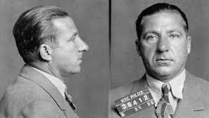

Frank Costello

Frank Costello, known as "The Prime Minister of the Underworld," was a powerhouse within the American Mafia
and a major figure in national politics. He rose to leadership of the Luciano (later Genovese) crime family.
Crimes He Was Convicted Of
- Tax evasion
- Illegal gambling
- Racketeering (suspected but not convicted)
Impact on Organized Crime
- Influenced American politics through bribery and corruption.
- Encouraged the Mafia to be low-profile and business-oriented.
- Built extensive gambling operations across the U.S.
Other Mobsters